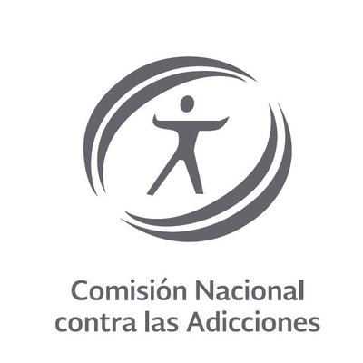
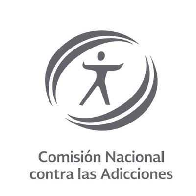

#GeneraciónSinAdicción
Diariamente mueren 3,000 adolescentes por causas relacionadas con el consumo de drogas. Porque detectar un problema de consumo de drogas puede salvar vidas, la Comisión Nacional contra las Adicciones te ofrece las siguientes herramientas que te permiten:
- Conocer si tú estás en riesgo de consumo de drogas o adicción.
- Identificar las señales de alerta de consumo de drogas en alguien más.
Si fumas o consumes alcohol u otras drogas, nosotros te decimos cómo puedes elegir diferente. No permitas que el consumo de drogas dañe tu salud y te aleje de tus metas. Si eres madre, padre o maestro, tu ejemplo es importante!! Acércate a tus hijos o alumnos y evita que las drogas lo hagan antes que tú.
Manda un mensaje privado con la palabra TEST para conocer el riesgo que las drogas causan en tu vida o para conocer las señales de alerta del consumo de drogas en alguien más.
 Línea de la Vida/
Línea de la Vida/ @LineaDe_LaVida
@LineaDe_LaVida
El chatbot de #GeneraciónSinAdicción te hará una serie de preguntas breves para identificar tu nivel de riesgo de consumo de drogas y las señales de alerta de consumo en alguien más. Es completamente gratis y sin compromiso. Los expertos de La Línea de la Vida de la Comisión Nacional contra las Adicciones te brindan asesoría gratuita, especializada y confidencial, 365 días al año, 24 horas al día
No estás solo, nosotros te apoyamos. #GeneraciónSinAdicción
Llama a La Línea De La Vida: 01 800 911 2000